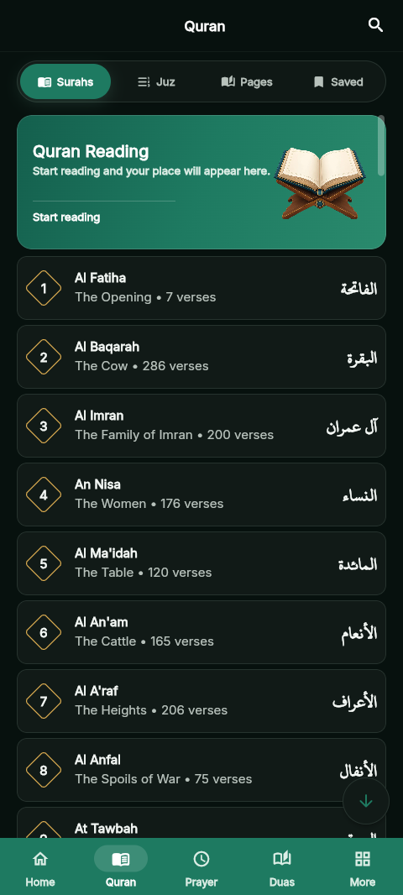
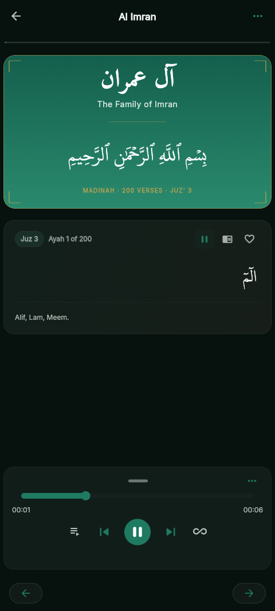
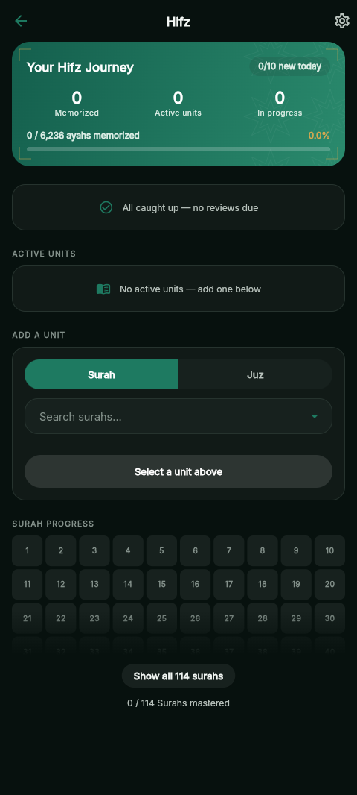
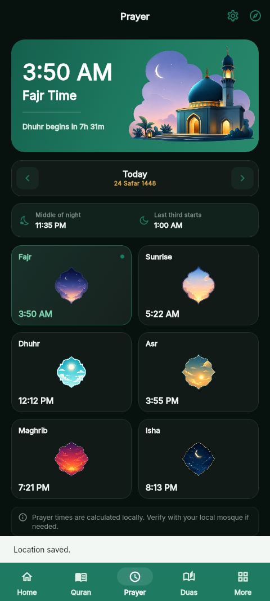
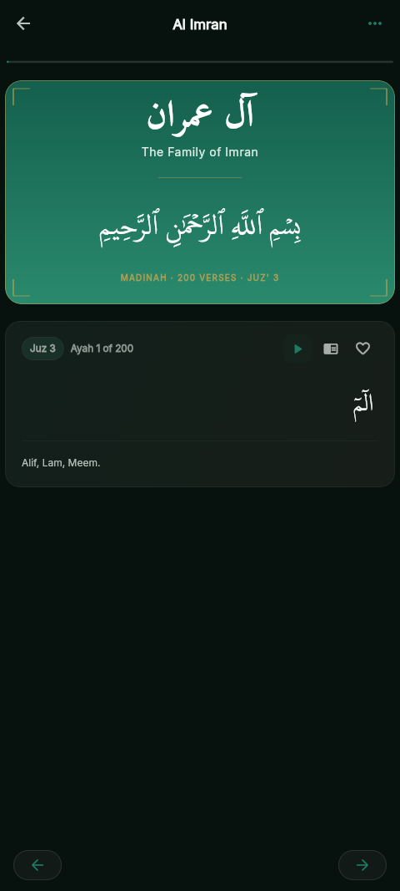

Read by surah or juz
Open any surah, resume your last-read ayah, and follow along with translation, transliteration, and tafsir where available.
بِسْمِ اللَّهِ الرَّحْمَٰنِ الرَّحِيمِ
eQuran is a free, open-source Quran companion with reading, recitation, prayer times, and memorization tools in one calm app.

Open any surah, resume your last-read ayah, and follow along with translation, transliteration, and tafsir where available.

Stream each ayah from a catalog of 30+ reciters, or download the Quran for offline listening.

A spaced-repetition memorization system with reading plans that keep your revision steady and visible.

Accurate daily prayer times, reminders, prohibition windows, and Qibla direction wherever you are.
Save any ayah with a personal note and return to it whenever you need. Your library, kept simple.
Post-prayer dhikr sequences, a salah tracking dashboard, and reading statistics that show your routine.
Pick a reciter, tap an ayah, and let the voice carry the text. Built for the moments you just want to listen.

Calculated for your location, respectful of the sun. Fajr to Isha, with the quiet hours honoured.
Location-aware prayer times with configurable calculation adjustments and prohibition windows.
Notifications that nudge, never nag. Keep your day anchored without breaking your focus.
Know the direction of the Kaaba from anywhere, rendered clearly in the app.
Default
Calm blue
Evening tones
Paper feel
AMOLED
Warm red
Six schemes, each with light and dark. The text stays the centre of the page.
No ads, no accounts, no noise. eQuran is built with Flutter, released under the MIT license, and available on F-Droid and GitHub.